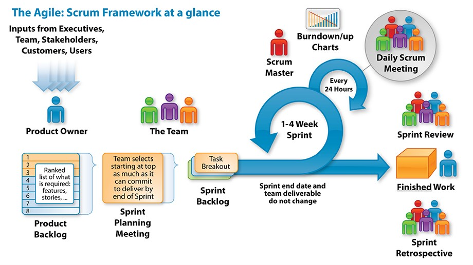
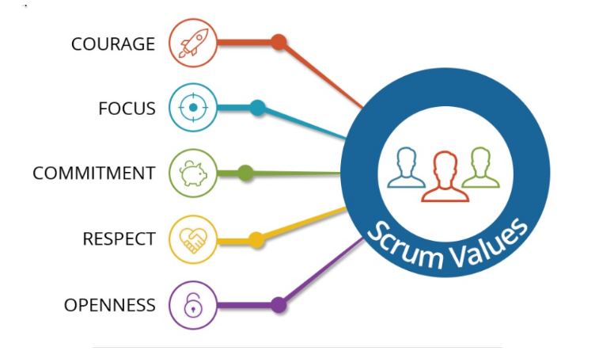

Scrum is a framework within which people can address complex adaptive problems, while productively and creatively delivering products of the highest possible value.
Scrum is a lightweight framework that helps people, teams and organizations generate value through adaptive solutions for complex problems.
What are the benefits received from the scrum methodology?
Higher productivity
Better quality products
Higher productivity
Better quality products
Higher productivity
Better quality products
The Scrum Framework
Scrum events
The Sprint
Sprint Planning Meeting
Daily Scrum
Sprint Review
Sprint Retrospective
Scrum artifacts
Product Backlog
Sprint Backlog
Increment
The Scrum Values
The Scrum Team
The product owner
The scrum master
The development team
Advantages of Scrum
Development process happens in short iterations
Feedback
The development team
Improved quality of the development process
A common understanding of the project and its solutions.
Prioritization
Disadvantages of Scrum
There are no deadlines for delivering products
Scrum is mostly suited for smaller
There are no deadlines for delivering products
Scrum is mostly suited for smaller
THANK YOU FOR WATCHING